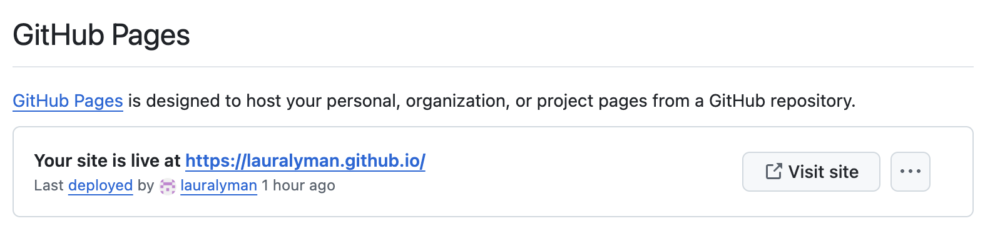

project:
type: website
output-dir: docsPortfolio Part 5 Instructions
STAT 244SC
Set Up
In a separate tab, open up Github and log into your account associated with your MHC email address.
Navigate to your
test_websitedirectory (folder) in rstudio.mtholyoke.edu. At this point, yourtest_websitedirectory should just have:
.gitignoreREADME.mdtest_website.Rproj
- Make sure you can see the
Gittab (usually on the top right byHistoryandEnvironment. If you can’t, double-click on yourtest_website.Rprojfile in theFilesexplorer (usually the panel on the bottom right).
Create the Quarto Website
Click
File->New Project->New Directory->Quarto Websiteand make sure this is saved under yourtest_websitedirectory.Choose the name of your new Quarto website directory.
- If your website will be hosted at https://username.github.io (this is the default),
- save the
Directory nameasusername.github.io; for example, since my website will be at https://lauralyman.github.io, I will save my directory name aslauralyman.github.io
- If your website will be hosted at
https://username.github.io/some_name(this is probably not the case),
- save the
Directory nameassome_name
Select
Knitras the associated engine. Make sure nothing is selected except (optionally)Use visual markdown editor
We now have all the ingredients for a default Quarto website.
When you initialize a Quarto website, RStudio will automatically produce:
_quarto.ymlabout.qmdindex.qmdstyle.css- an
Rprojfile (in my case,lauralyman.github.io.Rproj)
Exploring Your Website
(1) _quarto.yml
The _quarto.yml file includes: * the title of your website; * pages on the website: * the main landing page is index.qmd; * about.qmd is an optional additional page (that is, where you might write about yourself on a website); * a format section under format (includes, for example, the color scheme of the website)
(2) index.qmd
The index.qmd file controls default homepage for your website. To see ways to customize this website, check out this guide: https://quarto.org/docs/reference/projects/websites.html
(3) styles.css
The styles.css file is where you can place custom styles in your website (optional)
To render initial version of your website, navigate to index.qmd and hit Render.
Exercise
The
titlefield inindex.qmdis the header text at the top of your landing page (home page). Change it to something else. For example, I will change it to say “Welcome to my website!”.
ClickRenderto see if your change worked!Under
_quarto.yml, change thetitlefield to different text. For example, I will change mine to say “Laura Lyman’s Website”.
Go back toindex.qmdto hitRenderto see your changes.
Changing Output Directory of Quarto Website
This step is critical if you want to host your website on Github using Github pages (which you do!)
The output directory is the folder is where Quarto saves the files to render your website. To use Github pages, we need this output directory to be named docs.
Go to
_quarto.ymlAdd the line
output-dir: docsundertype: website. For example, my code looks like this:
Hit save
Navigate back to
index.qmd. You should be able to see thedocsfolder appear.The default folder for website files is
_site, but now after saving/rendering, we (correctly) have thedocsfolder instead. Go ahead and delete the_sitefolder.
Moving Files to Correct Locations
We actually need all of the generated website code in username.github.io to be in your outer directory (the one that is directly linked to Github). I know this step will feel awkward, and I’m sure there’s likely a better way to do this, but for now, let’s do the following.
Navigate to your
username.github.iodirectory and check every file inside of it.Click on the gear icon and then select
Move. Move all of the files up one directory (totest_website).Now navigate to
test_website. You can actually delete thetestwebsite.Rprojfile (but be sure to keep theRprojfile with your Github username!)
Commit Changes to Github
Let’s try committing what we have to Github.
Click on
Commitunder theGitpane (usually on the top right of RStudio).Select all files except the
.gitignoreAdd a commit message.
Click
Commit.Click
Push.Navigate to your Github account. If successful, you should see your new files added there.
Configure Website on Github
On your Github account, click
Settings(gear icon on the top of the website).On the left navigation panel, find and click on
Pages.Under
Branch, selectmain. Change therootfolder todocs.Click
Save.Refresh the page. You should eventually see something like this:

It may take up to 10 minutes to see the above, since it takes time for your website to first deploy.
- Once Github indicates that your website is deployed, click “Visit site” to go look at it. Your website is now on the internet!